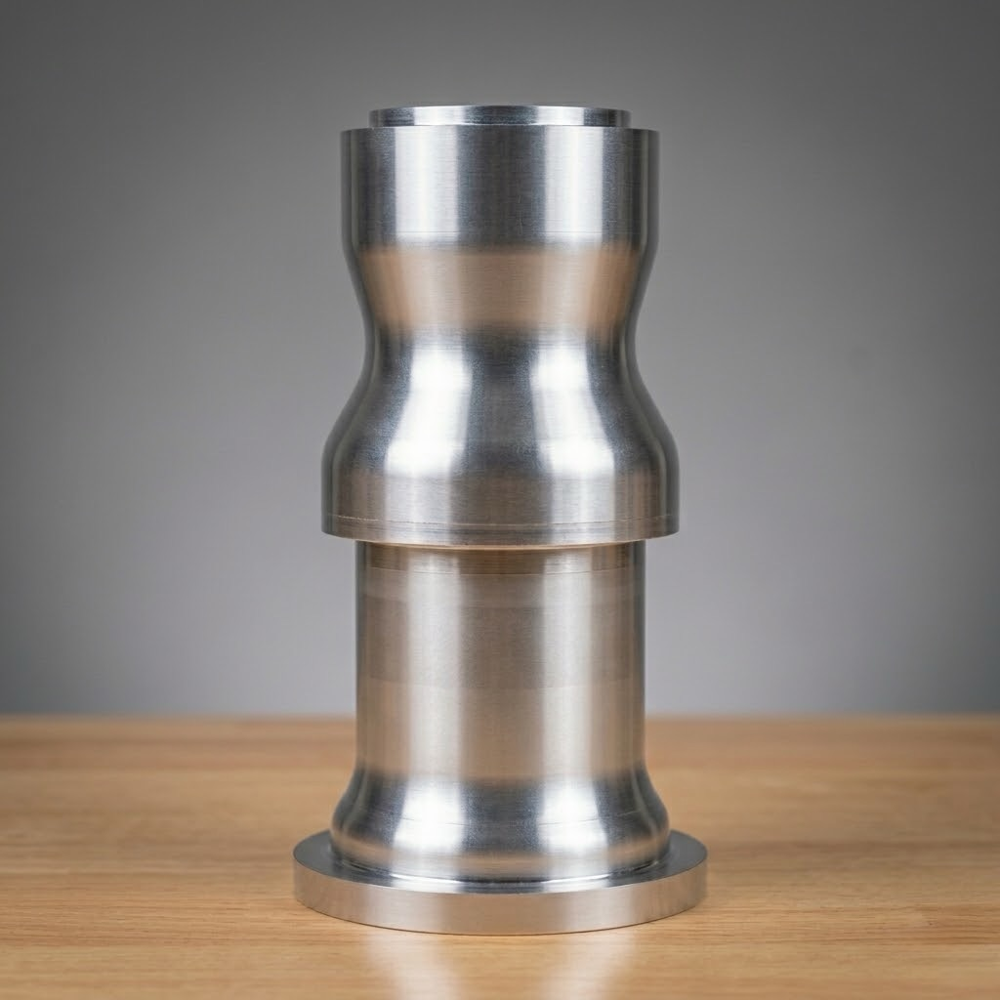

Project Overview
Developed for the Regeneratively Cooled Engine (RCE) Challenge, this liquid-propellant engine is designed to produce 800 lbf of thrust for a 90-second burn duration. The assembly features a high-conductivity copper combustion chamber liner to optimize heat transfer, while the structural airframe and components are machined from aluminum.

Fig 1. Exploded view of the liquid-propellant engine assembly, illustrating the integration of the copper chamber liner and structural aluminum components.
1. Manufacturing of chamber liner
Machining the 9-inch copper liner required two setups on the TL-1 lathe and one on the VF-2 mill, utilizing its 4th-axis capabilities. The primary manufacturing challenge was the internal profiling, which necessitated boring to a depth of 7.9 inches with a narrow 1.17-inch minimum diameter, alongside machining 50 external cooling grooves of three varying widths.

Fig 2. Final technical drawing of the combustion chamber liner, reflecting updated DfM adjustments and tolerance requirements.
Final profiling operation setup

Following the internal profiling, the external profile was turned in two setups. To compensate for the limited clamping area on the chuck, a tailstock and custom internal slug were utilized to provide crucial additional rigidity.
VF-2 setup for the external grooves

Fixtured with custom slugs on both ends and a through-rod for stability, the 50 external cooling grooves were machined via slitting. The part was precisely clocked utilizing the 4th-axis capabilities of the VF-2.
Challenges & Design Iterations
Transitioning from theoretical models to physical hardware presented several manufacturing bottlenecks. To maintain structural integrity and precision, specific design for manufacturability (DfM) adjustments were required on the fly.
Challenge: Internal Profiling Rigidity
The initial process plan lacked the necessary rigidity for the severe depth-to-diameter ratio of the combustion chamber. Iterative testing revealed significant harmonic chatter past a depth of 7.3 inches, threatening to destroy the internal surface finish.
The Design Change
We procured a 0.75-inch solid carbide boring bar to maximize the modulus of elasticity. To accommodate the tool's maximum stable reach limit, I truncated the internal geometry by 0.6 inches. This DfM adjustment ensured mechanical integrity with a negligible loss to theoretical engine performance.
Challenge: Thin-Walled Concentricity
Machining 50 complex external cooling channels into thin-walled copper across two different platforms (Haas TL-1 Lathe and VF-2 Mill) posed a severe risk of deformation and loss of concentricity between the internal bore and external grooves.
The Design Change
I designed and implemented a custom machining mandrel utilizing tapered locating cones. This fixture secured the part between centers, providing vital radial support during the lathe turning and acting as the primary work-holding fixture for precise 4th-axis clocking on the mill.
2. Manufacturing of Engine Jacket
Due to the extreme length of the part, we were unable to machine the original design as a single continuous piece. Instead, we adapted by cutting the jacket into two separate sections and machining them independently. Additionally, all ports and bolt hole patterns were executed manually on the mill.

Fig 3. Technical drawing of the engine jacket, detailing dimensions and tolerances for the coolant routing features.
[First Operation Title e.g., Primary Turning]

[Insert a description of the first major manufacturing step for the engine jacket. Discuss any specific fixturing required or tolerances hit.]
Second Section of Jacket

Machining this segment required two distinct setups. Due to the clearance constraints created by the dual flanges, both right-hand and left-hand 35-degree profiling tools were utilized to successfully machine the external contour.
3. Manufacturing of Engine Manifold
The engine manifold is a complex, precision-machined component with intricate internal flow channels. Its primary function is to distribute propellants and coolants. To achieve the required tolerances on multiple port sealing surfaces and the complex internal geometries, we utilized multi-axis CNC machining and precise workholding setups.

Fig 4. Technical drawing of the engine manifold, detailing port geometry and sealing surfaces.
[First Operation e.g., Main Port Face Roughing]

[Insert a description of the first major manufacturing step for the engine manifold. Discuss any specific fixturing required, such as 3+2 axis positioning, or tolerances hit.]
[Second Operation e.g., Secondary Port Machining]

[Insert a description of the secondary machining operations. Discuss how you achieved the required surface finishes (e.g., 32 RMS) for the sealing surfaces.]